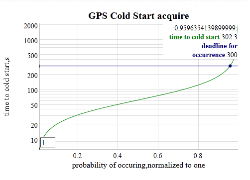

Clutter example demonstrates the time it takes to integrate an electronic signal buried in EMI noise.
In this case, a GPS is initiated from a cold-start and the probability that the GPS is locked on a position after a specified time is shown. 